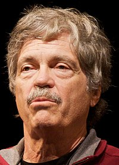

Alan Kay, (Springfield, 17 de mayo de 1940), es un informático estadounidense. Es conocido por sus trabajos pioneros en la programación orientada a objetos, el diseño de sistemas de interfaz gráfica de usuario
Kay consiguió licenciarse en Matemáticas y Biología Molecular de la Universidad de Colorado, y el grado de Maestro y Doctorado de la Universidad de Utah. En la Universidad de Utah en los sesenta, Kay trabajó con Ivan Sutherland en aplicaciones gráficas pioneras, incluyendo Sketchpad.
Kay entró a trabajar en el Centro de Investigación de Palo Alto (PARC - Palo Alto Research Center) de Xerox en 1970. En los setenta fue uno de los miembros principales del centro, desarrollando prototipos de estaciones de trabajo en red, usando el lenguaje de programación Smalltalk.